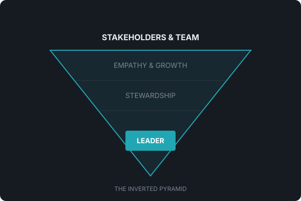

Servant leadership focuses primarily on the growth and well-being of people and the communities to which they belong.
Instead of giving orders, ask: "What can I do this week to remove a barrier for you?"